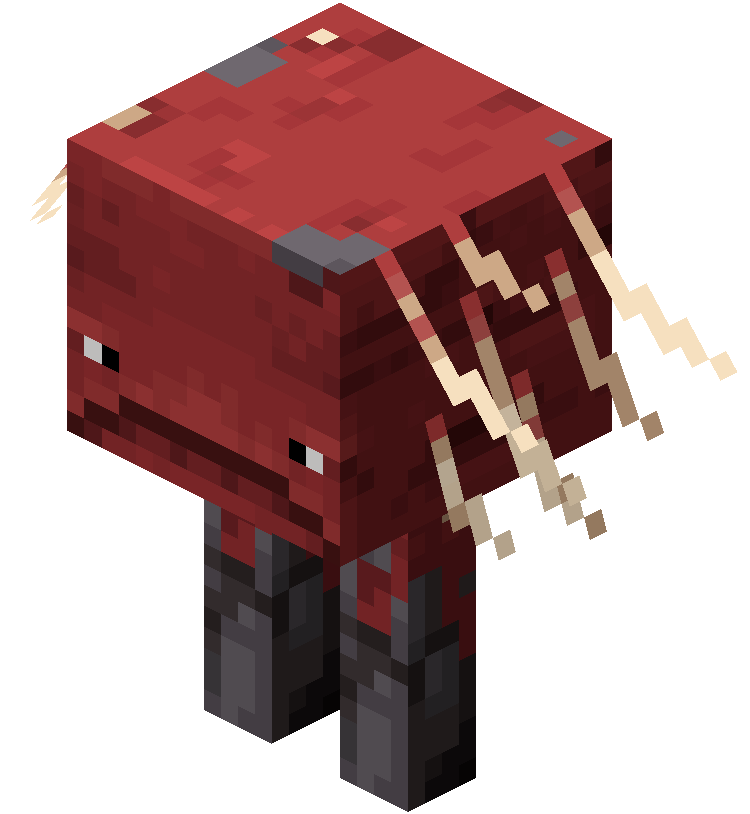
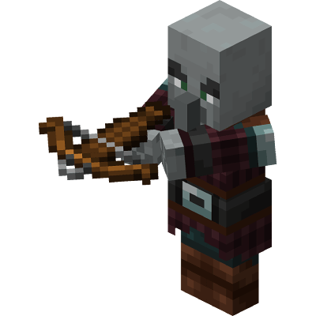
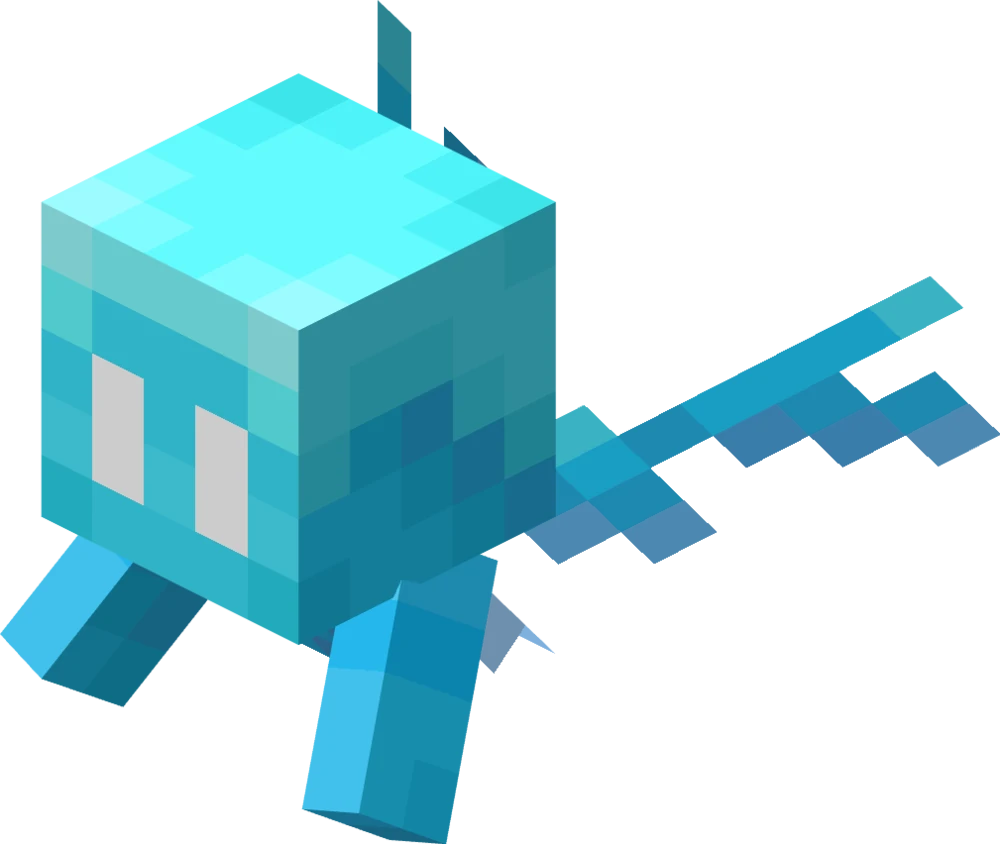
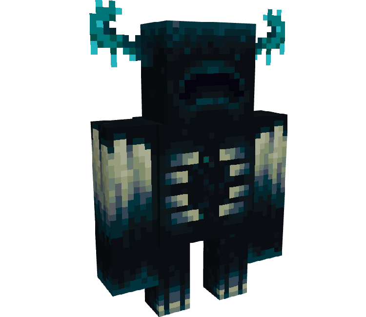
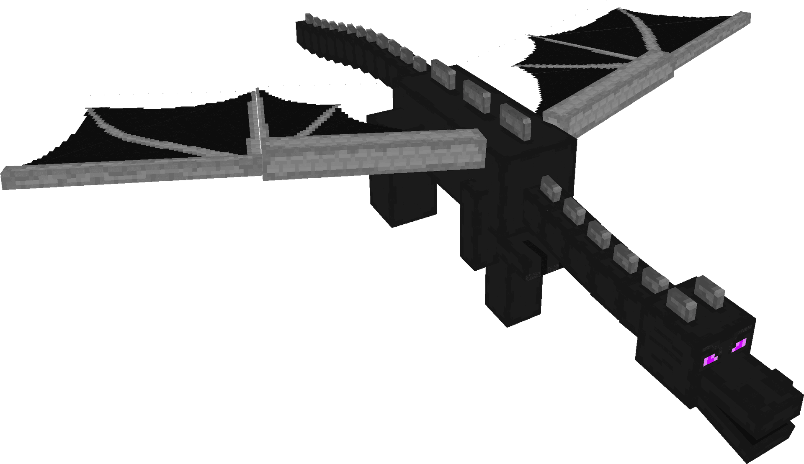

Хто така лавомірка? Мирний моб, який живе в лаві Додається у грі Minecraft з версії 1.16 (Nether Update) Має червоний колір і довгі тонкі ноги Може ходити прямо по лаві Для чого потрібна? На ньому можна їздити по лавових озерах у Нижньому світі (Nether) Щоб керувати, потрібне сідло та «вудка з викривленим грибом» (Warped Fungus on a Stick) Цікавий факт Коли лавомірка виходить на сушу, їй стає холодно — вона темніє і починає тремтіти

Хто такий розбійник? Ворожий моб, який з'явився в грі Minecraft у версії 1.14 (Village & Pillage Update). Розбійники є частиною рейдів (набігів) на села та можуть також патрулювати світ у групах. Вони озброєні арбалетом і можуть бути досить небезпечними для гравців, особливо якщо вони з'являються у великій кількості або під час рейду.

Хто такий елей?Це дружній літаюча істота, яку можна знайти або призвати за допомогою музичної скриньки (блок нот) у фортецях з дорогами.

Хто такий варден? Варден - це ворожий моб, який з'явився в грі Minecraft у версії 1.19 (The Wild Update). Варден є дуже сильним і небезпечним мобом, який живе в глибоких підземних печерах. Він має унікальну механіку, яка дозволяє йому відчувати вібрації та рухи гравців, що робить його особливо складним для уникнення або боротьби. Варден не бачить гравців, але він може відчувати їх присутність через звуки та рухи, що робить його дуже небезпечним ворогом для гравців, які досліджують підземні печери.
